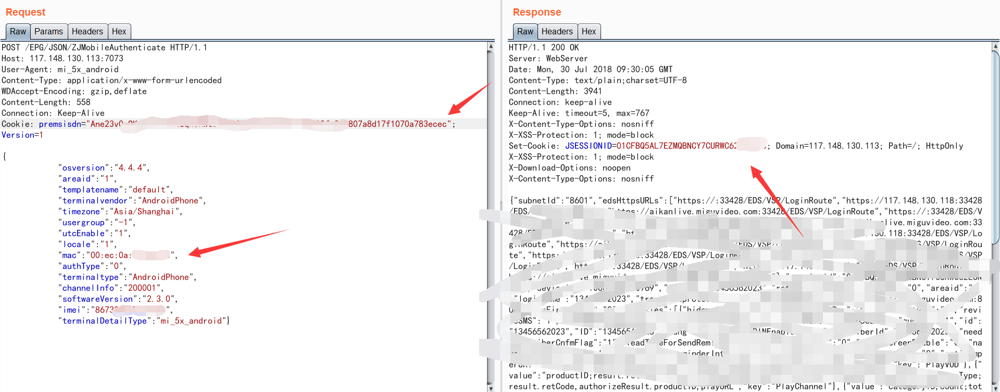

分享一个比较有趣的漏洞
偶然获得一份漏洞报告，讲得是某运营商的手机app在4G网络的情况下可以自动登陆，然后自动登陆处存在越权可以获得一个encrypttoken，那份漏洞报告中给的内容很粗略。在app检测到用户连接到是wifi的话就需要提供短信验证码等机制登陆，但是如果判断是4G网络就会发送请求登陆的包，网关获取到这个包之后会在数据库中搜索IP对应的手机号，然后在包头部插入x-up-calling-line-id字段，字段的值就是手机号。然后后端接口获取到x-up-calling-line-id值，就返回一些敏感信息。
这个漏洞已经修复了，我就找了其他的几个可以直接4G网络下自动登陆的APP来测试是否也存在相同的漏洞
先用手机抓包：
手机上抓包时是没有x-up-calling-line-id字段的，将包一模一样的复制然后在burpsuite中将包重新发送：
可以发现两个包的response是不同的，在手机上抓到的包302跳转的时候会传输一个premsisdn，而burpsuite上重新发的时候却没有。这是因为burpsuite用的是电信的网络，发包到服务器之后那后端不到IP对应的手机号，所以无法跳转，我们可以给他添加一个x-up-calling-line-id
跟随地址
这边可以获取到cookie参数，然后结合上面提交的mac地址，构造包来发送到指定端口获取seesion就可以登陆任意用户的账号了
